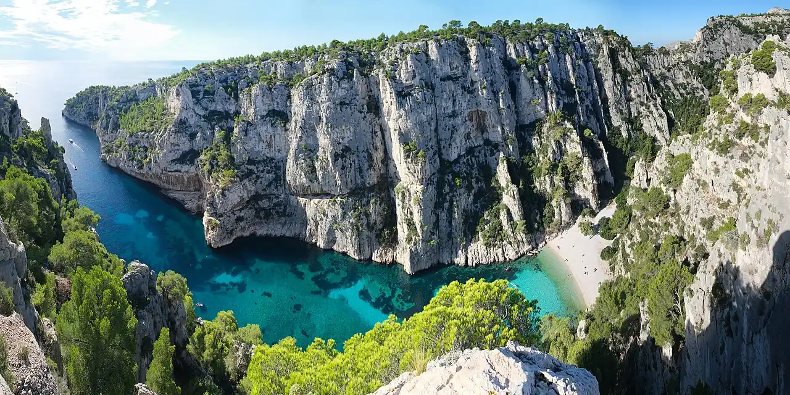

Calanque d’En-Vau
Cassis, Bouches-du-Rhône, France · baignade, snorkeling, kayak

Calanque étroite du Parc national des Calanques, entre Cassis et Marseille, fermée par une petite plage de galets au pied de hautes falaises calcaires. L’eau très claire invite à nager et à observer les fonds.
- Lieu
- Cassis, Bouches-du-Rhône, France
- Niveau
- Intermédiaire
- Activités
- baignade, snorkeling, kayak
- Type d'eau
- Mer / océan
- Coordonnées
- 43.20, 5.50 (position approximative du secteur)
Dangers à connaître
- Accès aux massifs réglementé en été selon le risque d’incendie : fermetures possibles.
- Descente à pied raide et glissante jusqu’à la plage.
- En kayak, le mistral pousse vers le large et lève vite la mer.
Le conseil d'Ocean Buddy
En été, consulte la carte d’accès aux massifs la veille, puis viens tôt à pied depuis Port-Miou ou en kayak par mer calme.
Ouvrir dans Ocean Buddy Télécharger sur l'App Store
Source : Fiche Ocean Buddy · septembre 2026 · à vérifier localement.